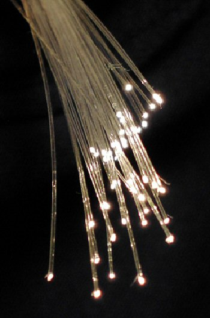
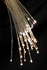

File:Fibreoptic.jpg

{kind=link}
No higher resolution available.
Fibreoptic.jpg (350 × 529 pixels, file size: 33 KB, MIME type: image/jpeg)
Summary[edit]
{kind=link}
| Description |
English: Fibre optic strands
|
| Date | |
| Source | First upload: (Sep 25 2004) en:Wikipedia |
| Author | BigRiz |
Licensing[edit]
{kind=link}
 |
Permission is granted to copy, distribute and/or modify this document under the terms of the GNU Free Documentation License, Version 1.2 or any later version published by the Free Software Foundation; with no Invariant Sections, no Front-Cover Texts, and no Back-Cover Texts. A copy of the license is included in the section entitled GNU Free Documentation License. |
| This file is licensed under the Creative Commons Attribution-Share Alike 3.0 Unported license. | ||
|
||
| This licensing tag was added to this file as part of the GFDL licensing update. |
File history
Click on a date/time to view the file as it appeared at that time.
| Date/Time | Thumbnail | Dimensions | User | Comment | |
|---|---|---|---|---|---|
| current | 10:59, 28 May 2006 |  | 350 × 529 (33 KB) | Raymond (talk | contribs) | Auf eine alte Version zurückgesetzt |
| 09:24, 28 May 2006 |  | 1,579 × 1,335 (525 KB) | Deglr6328~commonswiki (talk | contribs) | far better image of fiber optics from sandia national laboratory site | |
| 12:02, 22 January 2005 |  | 350 × 529 (33 KB) | Nordelch (talk | contribs) | {{GFDL}} |
- You cannot overwrite this file.
File usage on Commons
The following page links to this file:
File usage on other wikis
The following other wikis use this file:
- Usage on af.wikipedia.org
- Usage on ar.wikipedia.org
- Usage on ast.wikipedia.org
- Usage on as.wikipedia.org
- Usage on be-tarask.wikipedia.org
- Usage on be.wikipedia.org
- Usage on bg.wikipedia.org
- Usage on bn.wikipedia.org
- Usage on bpy.wikipedia.org
- Usage on bs.wikipedia.org
- Usage on ca.wikipedia.org
- Usage on ckb.wikipedia.org
- Usage on cs.wikipedia.org
- Usage on cy.wikipedia.org
- Usage on da.wikipedia.org
- Usage on de.wikipedia.org
- Usage on de.wikibooks.org
- Usage on dty.wikipedia.org
- Usage on el.wikipedia.org
- Usage on el.wiktionary.org
- Usage on en.wikipedia.org
View more global usage of this file.
{kind=link}
{kind=link}
{kind=link}
{kind=link}
{kind=link}
{kind=link}
{kind=link}
{kind=link}
{kind=link}